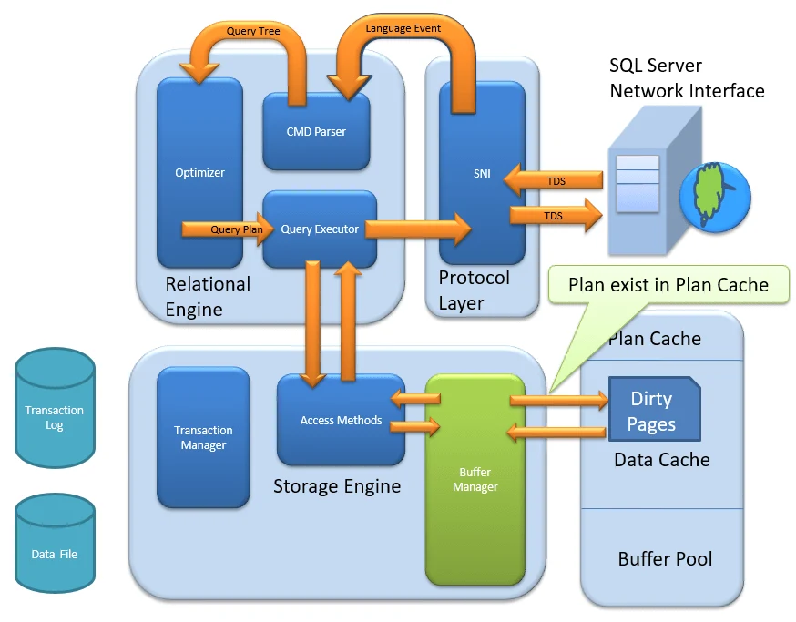

| Base of Comparison | MongoDB | SQL Server |
| Developed by and Initial Release | Developed by MongoDB Inc. and initially released on February 11, 2009. | Developed by Microsoft Corporation and released initially on April 24, 1989. |
| Database Model | Non-Relational Database: Document-oriented (key-value structure) | Relational Database: Tables format |
| Implementation Language | JavaScript, Python, Java, PHP, C++, C, Ruby, Perl | C, C++ |
| License | Open-Source | License required |
| Data Schema | Dynamic Schema | Fixed Schema |
| Query Language | MongoDB Query Language | SQL Query Language |
| Scalability | Horizontal | Vertical |
| Map Reduce | Supports Map Reduce method. | Does not support the Map-Reduce method. |
| Joins | No | Yes |
| Transaction | MongoDB provides Multi-document ACID transactions with snapshot isolation. | MS SQL Server provides ACID transactions without snapshot isolation. |
| XML support | No | Yes |
MongoDB vs SQL Server: Which is Better? [10 Critical Differences]
Nidhi B. on Database Management Systems, Microsoft SQL Server, MongoDB • February 10th, 2022 • WRITE FOR HEVO

While building a software application, the question arises where will you store your data and how? The traditional approach is a simple text file or CSV file which is not a good choice in today’s big data world. The solution is Database Management System(DBMS) which allows different user application programs to concurrently access the same Database.
A Database Management system(DBMS) is a simpler, easier, reliable, faster, secure, and powerful software tool for Storing, Managing, and Retrieving data. There are two types of Databases: Relational and Non-Relational Databases. An example of a Relational Database is SQL Server and a Non-Relational Database is MongoDB. We will be discussing the key differences between MongoDB vs SQL Server in this blog.
Table of Contents
- What is MongoDB?
- Features of MongoDB
What is MongoDB?
MongoDB is an open-source, cross-platform, document-oriented, and non-relational database system. MongoDB is developed by MongoDB Inc. and was first released on February 11, 2009. Its stable release is MongoDB 5.0.5 released on 6 December 2021. It is written in different programming languages like JavaScript, Python, Java, PHP, C++, C, Ruby, Perl.
MongoDB is a NoSQL Server in which data is stored in BSON (Binary JSON) documents and each document is essentially built on a key-value pair structure. As MongoDB easily stores schemaless data, make it appropriate for capturing data whose structure is not known. This document-oriented approach is designed to offer a richer experience with modern programming techniques.
To install MongoDB click here.
Features of MongoDB
Main features of MongoDB which make it unique are:
High Performance
Data operations on MongoDB are fast and easy because of their NoSQL nature. Data can be quickly stored, manipulated, and retrieved without any compromise on data integrity.
Scalability
In the Big Data era, MongoDB data can be distributed across a cluster of machines quickly and equally, free of bulkiness. The scalability of MongoDB handles a growing amount of data capably. Sharding is a process in MongoDB used to horizontally scale the data across multiple servers when the size of data increases.
What is SQL Server?
SQL Server is a Relational Database Management System(RDBMS). It is also known as Microsoft SQL Server or sometimes as MSSQL. SQL Server is developed by Microsoft and was initially releases on April 24, 1989. Its stable release is SQL Server 2019 released on 4 November 2019. MSSQL is written in programming languages like C and C++.
SQL Server is based on the relational model introduced by E. F. Codd. In RDBMS data is stored in tables and the relationships among the data are maintained between tables. In tables, data is organized in rows and columns format. Each column represents a particular field or feature and each row in the table represents an entry or a record.
Features of SQL Server
Main features of SQL Server that make it highly usable are:
Cloud Database Support
Microsoft SQL Server offers editions that can be integrated with Microsoft cloud or Azure SQL with built-in security and manageability. Cloud database support makes SQL Server highly available, fast failover with minimum uptime.
Ease of Management
Microsoft SQL Servers can easily be used with Windows and Linux systems. SQL Server deployment and its management is easy with Kubernetes.
MongoDB vs SQL Server: Key Differences
The key differences between MongoDB and SQL Server:
The following section talks about the primary differences between MongoDB vs SQL Server in detail:
Developed by and Initial Release
MongoDB is developed by MongoDB Inc. and was initially released on February 11, 2009.
SQL Server is developed by Microsoft Corporation and was initially released on April 24, 1989.
Database Model
MongoDB is a Non-Relational Database based on a document-oriented structure that internally is based on a key-value structure.
SQL Server is a Relational Database based on relatable structured tables with various rows and columns.
Implementation Language
MongoDB is implemented in JavaScript, Python, Java, PHP, C++, C, Ruby, Perl, C, C++ whereas SQL Server is implemented in C and C++.
License
MongoDB is an Open-Source DBMS whereas a SQL Server license is required for commercial purposes.
Data Schema
MongoDB has a flexible dynamic schema that can easily be changed with the evolution of data, application, or business.
SQL Server has a fixed Schema that is predefined before inserting any data. Fixed schema means schema can’t be changed as data, application, or business requirement evolves.
Conclusion
MongoDB is a database that is more advanced and capable of handling big data with dynamic schema features. SQL Server is an RDBMS that is used to manage the relational database system and offers end-to-end business data solutions. In the case of unstructured data MongoDB is a good choice. Also, MongoDB is open source which makes it readily available.
No doubt SQL Server is going strong for many years but now with the era of Big Data, MongoDB seems to have a bright future. But, that doesn’t mean SQL Server will be completely eradicated. The choice of database between MongoDB and SQL Server is completely specific to the user’s needs.
Hevo Data, a No-code Data Pipeline provides you with a consistent and reliable solution to manage data transfer between a variety of sources to destinations like MongoDB and SQL Server, with a few clicks.